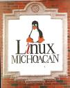

![[Bottom Bar]](../../common/images/Bottombar-es.gif)
Cederik Leon De Leon Acuña
Acerca del Autor:
Cursó Economia en La UMSNH. Estudia Fisica y
Matematicas en La UMSNH. Director y Fundador de
Linux Michoacan OpenSource, Presidente de "General
Research In Systems Mexico" Asesor Computacional del
Festival Internacional de Organo Computologo
encargado de Analisis en Linux Michoacan. Vago de
profesion ;)
Índice:
Linux Marketing
Historia
¿Cómo nos financiamos?
Publicidad
|
Linux en Michoacán (México)

Resumen:
En este artículo Cederik comparte con nosotros sus
experiencias sobre cómo él y un grupo de amigos consiguieron
poner en marcha una consultoría informática. Podréis
encontrar unos cuantos consejos prácticos sobre cómo se
puede difundir Linux a la vez que se puede ganar dinero con
ello.
Linux Marketing
Últimamente todos estamos
en una euforia tremenda en todo lo que Linux puede hacer por
nosotros, y cómo ya está entrando en un mundo global de
información, como la oficina, casa, escuelas y demás. Pero
dentro del mundo de los desarrolladores y prestadores de
servicios Linux aún estamos en pañales, ya que nunca tendremos
el control total de cómo crece Linux, que evidentemente es a
pasos agigantados, y sea como sea, algunos nos podemos
especializar en: Redes, otros nos especializamos en Kernel
Hacking, otros en aplicaciones de oficina, manipulación de
datos, etc, etc, etc. Pero cuando se trata de vender Linux,
no como idea ni como un sistema operativo, ya que de hecho no
podemos. Nos topamos con el problema de cómo hacerlo para no
defraudar la filosofía del software libre, tan bendecida por
muchos de nosotros y tan maldecida por otros tantos amantes
de... bueno ya saben a que empresa me refiero.
Cuando nos juntamos algunos
expertos, y otros no tanto, en un pequeño grupo de Linuxeros,
dispuestos a emprender un Linuxnegocio, es la primera pregunta
que nos hacemos ¿cómo diablos puedo lucrar con algo que es de
por sí gratuito? Y que por tanto puede que hasta sea una
limitación.
Ahora me permitamé contar
la historia de cómo nace "Linux Michoacán Open Source", acá en
México.
Historia
Hace más o menos 1 año, por
septiembre de 1997 un compañero, que a lo mejor ya leyeron
algo de él y si no les recomiendo que lo hagan, Temo Pacheco,
experto en lo que es TeX, LaTeX y familia, nos juntamos en mi
cubículo, donde trabajaba como administrador de RED
universitaria y desarrollaba para Linux y SGI en mis ratos
libres, para conversar sobre tecnología y computadoras, de
cómo Linux es la mejor opción para todo lo relacionado con el
mundo de las computadoras, etc .. el cuento ya lo saben.
Entonces nos surgió la idea de por qué no establecer Linux en
el estado de Michoacán, pero como TAL. Con edificio propio,
máquinas propias, teléfono y demás servicios que puedan ser
agradables y útiles para una EMPRESA. Recuerdo que estaba
programando no se que, y así como no poniéndole mucha
importancia le dije: "Ok!", desde ese momento formalmente se
consolidó "Linux Michoacán". Temo Pacheco y un servidor,
fundamos lo que nunca nos imaginamos que sería tan popular en
México, ya verán por que.
|
|
De izquierda a derecha:
Miguel A. Corona Duran (Gerente de Ventas)
Cederik Leon De Leon Acuña (Director General)
Francisco Alcaraz Ayala (Director de División (RP))
Cuauhtemoc Pacheco Diaz (Director de División (TD))
|
Inmediatamente después, caí
en la cuenta de lo que acababa de comenzar, después de salir
de mi mundo de 2 dimensiones y entrar al mundo de 3
dimensiones o el mundo real, me topé con que ahora era el
Director General de Linux Michoacán y nuestros amigos de
escuela (Física y Matemáticas, cabe mencionar que emigré de
Economía a Física por razones obvias), entonces ya eramos:
Temo, Paco, Mike, Leon F, Abril, More y Cederik (yo). Un total
de 7 personas en esta empresa: cinco de la escuela de Física y
Matemáticas, uno de Biología, y otra de Ing. Química. Ahora
necesitabamos apoyo para poder seguir adelante, nos dirigimos
al centro de cómputo universitario con mi gran amigo el Ing.
Antonio Chávez Garibay, administrador de la RED Universitaria
de Cómputo, para que nos prestara un dominio
(http://www.linux.umich.mx) el cual nos lo facilitó con mucho
gusto. Arrancamos ese servidor con una 486 Cyrix con 4MB
RAM!!! tarjeta de red LANTIC-CII y par trenzado, monitor
monocromo y Slackware 1.1.59, teníamos nuestro servidor WEB,
FTP anónimo, telnet, correo y todo!! en un minidisco duro.
El gusto no nos duró mucho porque el edificio que teníamos,
mejor dicho, el espacio que teníamos reservado para investigar
y Linuxear, nos lo requirieron, y como condición del dominio
era que necesitamos estar en instalaciones de la universidad,
se nos retiró el dominio y el espacio.
Fue momento de pensar en
acabar con la idea, pues como buenos universitarios, se nos
cerraron las puertas, o al menos eso creímos, pero después
conseguimos el "apoyo" de gente que nos facilitó un edificio
"Propio" a cambio de una módica renta de algo así como de
$200.00USD. Y que es donde actualmente estamos.
¿Cómo nos financiamos?
Es una pregunta algo fácil
de contestar pero difícil de ponerla en práctica, a mi amigo y
compañero, Temo Pacheco y Yo se nos invitó a dar una serie de
cursos y talleres sobre diversos temas, nada que ver con
Linux, pero si con computadoras y software: HTML, C, Internet,
administración de redes, etc. Con eso nos ganamos una buena
cantidad de dinero y lo seguimos haciendo, conscientes de que
aún existe muchísima gente que no maneja, y no pretende
hacerlo nunca, Linux. Pendientes de que si quieren un curso
de Excel se los proporcionamos y si quieren un curso de
WinBugs, lo hacemos, con la consigna que les mostremos el
poder de Linux y Xwin. Estos ingresos, sumados a becas
universitarias que reciben o recibían algunos colegas que
colaboran con nosotros ayudan a solventar el "difícil
arranque" de una nueva empresa. Ahora contamos con los
servicios enteros de un negocio establecido, nuestras
computadoras suman un total de 7, muy diferentes entre si, ya
que fueron fruto de la cooperación de cada uno de nosotros,
esto significa que cada quién donamos nuestros equipos para
Linux Michoacán.
Recientemente llegaron 2
estudiantes del Tecnológico Estatal para pedirnos que las
aceptáramos para hacer practicas profesionales de la carrera
de "Licenciado en
Informática", nunca habían utilizado UNIX ni nada parecido,
solo en libros, y dejenme decirles que ahora están muy bien
encaminadas en el mundo UNIX/Linux, sumamos ahora un equipo de
9 personas, más las que se acumulen en el transcurrir del
tiempo.
La pregunta obligada:
¿Cómo se mantiene Linux Michoacán?
Cierto es que no podemos
seguir manteniendo Linux Michoacán con los ingresos de cada
uno ya que no sería nada rentable, así que optamos por vender
los SERVICIOS de Linux, no a Linux, que quede claro.
¿Cómo es eso?
¡Fácil! Si tenemos 7
computadoras, todas en RED y con los programas como
StarOffice, GIMP, LyX, Netscape, Etc. Además de que contamos
con Modem y línea telefónica, además de acceso telefónico a
Internet pues vendemos acceso a Internet, con la comodidad de
una taza de café incluida en el precio, sumado a que estamos
al lado de una universidad. Bajo ambiente Linux, los
muchachos no se dan cuenta de lo que están usando, les hice
una aplicación gráfica para X que simplemente selecciona los
archivos a guardar en el floppy, cuando se los piensan llevar
a sus maquinas MS, y contentos, pagan el precio de algo así
como $1.5 USD la hora de Internet con café incluido. Algo
sumamente ridículo pero que exige demanda.
También les rentamos el uso
del equipo cuando no quieren Internet, y si lo que necesitan
es editar un texto, la máquina es lo que se renta, no el
software, quede claro, pueden utilizar cualquier editor de
textos, hoja de calculo, etc, etc. Por la módica suma de algo
así como $1.00 USD. ahora bien si quieren imprimir algo les
cuesta $.50USD la impresión Láser (es un poco menos de
.50USD), y la impresión a chorro de tinta un poco menos,
aunque yo no sigo tan convencido de esos precios ya que a la
larga es más caro el cartucho de tinta que el toner, si
comparamos el rendimiento pero en fin, políticas.
Sobre los cursos: ¿Como podemos vender Linux, en cursos?
Esta pregunta es difícil,
ya que implica:
Que la gente se interese por Linux
Obviamente que conozca Linux
Tenga o quiera tener Linux
Sepa que existe un lugar de respaldo Linux
Además que sepan que ese lugar es Bueno
En fin... PUBLICIDAD!!!!
Todo esto lo podemos ver
con calma, para no confundirnos. Pero total, suponemos que ya
tenemos nuestras premisas cumplidas, pues hay que estructurar
pequeños cursos que den a puerta cabal 3 niveles de usuarios:
básico, medio y avanzado. Ustedes sabrán qué incluir en cada
curso. Por lo regular nosotros tenemos estos 3 cursos Linux,
más el de programación para Linux y sistemas Unix en general,
pero es aparte, una medida atractiva es que planteen lo
siguiente:
| Curso | Duración |
| Básico | 1 semana 2 horas Diarias |
| Medio | 1 1/2 Semana 2 horas Diarias |
| Avanzado | 2 Semanas 2 Horas Diarias |
Los costos tienen que ser
demasiado atractivos!!! eso tenganlo en cuenta, no queremos
caer en que somos muy especializados como IRIX, SUNOS, HPUX,
Etc. Que sus cursos tienen precios estratosféricos, debemos
ser accesibles a la filosofía de Torvalds, recurden que es un
UNIX para todos, y como tal, todos tienen el acceso a pagar
cuotas módicas por conocerlo, las cuotas especializadas y
caras se ven más adelante.
Les daré una lista de lo
que aproximadamente cobramos nosotros:
| Curso | Costo en USD |
| Básico | $25.00 |
| Medio | $50.00 |
| Avanzado | $100.00 |
Y hacemos más atractivo el
curso, de la siguiente manera: Si quieren los 3 cursos, el
costo es de $150.00 USD. Ahí les incluimos: Café,
Reconocimiento, Tiempo máquina, Manuales en Disco y el
curso.
Pero esto no lo hace muy
atractivo para las grande mentes empresariales, que andan
buscando altos ingresos DIARIOS, pero eso es fácil,
relativamente, eso con algo de publicidad y contactos que se
hacen dando cursos. Un ejemplo es que cuando dimos un curso
de Internet en un InterCafé, conocimos a mucha gente de
diversas áreas y empresas, cuando se dieron cuenta de la
potencia de Linux estos alumnos, que además son grandes
empresarios o al menos estaban relacionados con alguna
empresa, nos recomendaron y quieren que "asesoremos" a sus
empresas para la instalación de redes, mantenimiento de su
equipo, o mantener como administradores sus páginas y sitios
WEB, junto con que quieren cursos de capacitación para sus
empleados del área de cómputo y programación.
Ahí podemos "hincar el
diente", o como comúnmente se le dice cargar la mano en los
precios, por que es muy poca la gente que puede solventar
problemas de alto nivel corporativo con soluciones tan
eficientes y claras como un simple y agradable Linux! o son
cosas más sencillas desde nuestro nivel de conocimientos como
instalar una red Win95 para enlazar 5 computadoras a Internet,
un trabajo que puede ser cuestión de 1 día (si se tienen los
medios Físicos necesarios) se pueden fácilmente echar a la
bolsa algo así como $500.00USD (estos precios pueden parecer
ridículos para algunos amigos lectores de otros países
distintos de México, pero recuerden que cada país tiene una
situación económica diferente y para los que esta cantidad nos
puede parecer elevada o al menos, adecuada, a otros sea que
esta muy por debajo de la expectativa económica de Alemania,
Francia y otros tantos países del 1er mundo; ustedes adecuen
sus tarifas basándose en lo siguiente una Coca-Cola en México
cuesta 25 Centavos de Dolar aprox.).
Pero sólo pueden lograr lo
anterior denigrandose a vender sus conocimientos de Winbugs y
M$-DOS, que son los más triviales, para poder jalar a la gente
al mercado Linux.
Publicidad: ¿Cómo anuncio
Linux?
Lo primero que hay que
hacer es contactar con todos los medios de comunicación
posibles: radio, prensa, televisión, onda corta, etc.. Hacer
una relación de quién es el encargado del área de tecnología,
para cubrir eventos de ese tipo, pedir el número de Fax y por
medio de "efax" de Linux mandarles una invitación para que
conozcan su "Centro Linux" haciendo hincapié en que no son una
empresa comercial, ya que si mencionan ese punto, lo más
probable es que los manden por un soberano "Cuerno", o en el
mejor de los casos los mandan al departamento de publicidad
donde les costará un "ojo de la cara", mencionen que
pertenecen a un proyecto internacional sin "Fines de Lucro" y
mostrarán nuevas alternativas tecnológicas del más alto nivel.
Recordemos que los periodistas siempre están buscando noticias
y si les hacen una invitación personalizada a cada uno de
ellos, los mandarán a las nubes... eso es 100% cierto.
Mientras tengan contentos a la prensa tienen ganado el 50% de
la contienda... Entrevistas en TV son muy efectivas. En una
ocasión nos entrevistaron en la TV local, en un programa
Infantil (lo que sea es bueno) y en casa recibimos fácil 100
llamadas preguntando donde pueden conseguir Linux o algo
relacionado. Cuando les pregunten eso, ustedes pueden vender
el disco que trae Linux, OJO!! EL DISCO, no Linux, si no
estaríamos rompiendo más o menos el esquema de Software Libre,
aunque diga que podemos hacer lo que queramos con Linux,
siempre y cuando le demos crédito al autor, mucha gente no
entiende eso, mejor hay que vender el disco a cuotas también
super-módicas, no queremos ser boraces por vender un disco
Linux y sacar en ese disco lo que no hemos podido con otras
cosas. Tengamos siempre presente que si vendo muchos discos
entonces tengo muchas máquinas con Linux, por lo tanto hay
usuarios inexpertos que requieren ayuda, y la asesoría !se
puede vender! también a precios módicos, ya que la verdad una
asesoría no nos cuesta mucho ya que son por lo general, cosas
muy simples, como la configuración de una impresora, o modem,
hacer los scripts de enlace a Internet, o una pequeña red...
cosas así. Debemos dejar al cliente satisfecho para que
regrese, además que seguro tomaran los cursos que ofrezcan.
Podemos también cobrar por la instalación de Linux, no por
ponerles Linux en una máquina, estamos vendiendo nuestro
tiempo, no Linux. Linux está ahí, prácticamente tenemos que
hacerle ver al cliente o nuevo linuxero que, nos estamos
"Prostituyendo" tecnológicamente hablando, estamos vendiendo
nuestros conocimientos y nuestro tiempo a cambio de dinero
(que de entrada nosotros sabemos que no es malo, pero esta
frase, siempre es algo ruda para el cliente y acepta sin mayor
recelo pagar por el trabajo, a fin de cuentas ¿cuántas
personas pueden hacerle el "Trabajito?").
Más publicidad: conferencias
Cuando uno ya tiene cierto
nombre y fama de Linuxero Fuerte (aunque también sabemos que
eso es un lugar aun lejos de alcanzar, pero que para el común
de los mortales donde estas es un lugar muy alto) pues
empiezan a llamarte a tí y a Linux Empresa, para que les des
una movida de neuronas a los escolapios de algún sitio en tu
país, en nuestro caso ya hemos impartido infinidad de
conferencias en varias partes de México. Donde siempre hay
gente que se interesa o que nunca había oído hablar de Linux,
o que sí pero no tenía claros los conceptos de Linux, etc.
Estrategias: Linux Vs MS
Esto es algo que no tiene
punto de comparación, sabemos que Linux es Infinitamente
superior a MS, pero la gente no lo sabe, estamos tan metidos
ya en Linux que lo más normal para nosotros es trabajar en
Xwin o el Shell es nuestro inseparable aliado en nuestras
tareas diarias, y cometemos el error de creer que la gente
puede entender esto de golpe y porrazo ¡FALSO!
La gente común no conoce
otra cosa que no sea Win95, su visión está opacada por las
nubes de Winbugs95 y 98 o cosas así (francamente me da
repugnancia hablar de ellas). Pero al grano, Linux es un
sistema que hemos llevado con una bandera de inocencia y de
indiferencia algo así como: "Aquí estoy, si quieres bien y si
no me da lo mismo", nos quedamos callados de proferir los
grandes puntos de Linux, y que si MS ataca a Linux, si nos
tachan de "socialistas de la programación", pues estamos
inmutables y nos entra por un oído pero sale por el otro.
Esto es válido para nosotros, a mi no me afecta en nada esos
comentarios mordaces, pero a la gente si!!!
Si ven a alguien que se
crea el "Gran GURU" de MS-C y le presentas a un sencillo
programador de ANSI C de UNIX, poco faltará para que te mande
a Cuba o en el mejor de los casos a Siberia, si no es que
antes te encaje una estaca en el corazón, todo esto claro
está, haciendo una invocación a San Bill Gates ¿A dónde me
dirijo? Debemos de ser agresivos en platicas y conferencias.
Entiéndanme que no quiero referirme a darle de golpes o mandar
a Torquemada para que torturen al miserable administrador de
Red Universitaria o empresarial a quien tratas de convertir al
"Linuxianismo", hay que mostrar gráficas de desempeño
(rendimiento), testimonios, Costos/Rendimiento, facilidad,
seguridad; comparar pues, que Linux es infinitamente superior
a Winbugs, con todas sus Letras! "¡¡LINUX ES MEJOR QUE
MICRO$OFT, Y POR MUCHO!!" por esto, esto, esto, esto. Y los
únicos que podemos enseñarles Linux y que los únicos capaces
somos nosotros (Todo esto claro, hablando de su empresa),
agarren casos de la vida real pregunten cuántas veces al día
se "traba" la computadora con Windogs95, cuántas veces te bota
un programa sin causa aparente. Hagamos ver que hay además de
Nosotros, hay miles de personas que pueden brindar ayuda
desinteresadamente, sin cobrar los $1500.00 USD de soporte NT
por cosas tan simples como: "UUUUUUU joven...Necesita comprar
la actualización de Windogs95.98 que cuesta mucho, además que
para eso requiere formatear el disco duro...".
Y por último, nunca se
paren el cuello diciendo que son lo más grande en Linux, sean
accesibles a toda la gente que quiera preguntar, desde la
pregunta más boba hasta la pregunta más compleja. Todos ellos
son clientes... Ahora, si no tienen una empresa... Igual,
somos Linuxeros, y en el Kernel andamos, no hay kernel se
hace el kernel al compilar.
Todas las marcas registradas
son propiedad de sus propietarios (o algo así).
Artículo original en Castellano
Páginas web mantenidas por Miguel Angel Sepúlveda
© Cederik Leon De Leon Acuña 1998
LinuxFocus 1998
|